측량및지형공간정보산업기사 (2020-08-22 기출문제)
1과목: 응용측량
1. 노선측량의 단곡선 설치를 위해 곡선반지름과 함께 필요한 중요 요소는?
- B.C(곡선시점)
- E.C(곡선종점)
- I(교각)
- T.L(접선장)
(정답률: 77%)

2. 수로도지에 해당하지 않는 것은?
- 황해용 해도
- 해저지형과 해저지질의 특성을 나타낸 해저지형도
- 해양영토 관리 등에 필요한 정보를 수록한 영해기점도
- 지적측량을 통하여 조산되 지적도
(정답률: 75%)
3. 해상교통안전, 해양의 보전·이용·개발, 해양관할권의 확보 및 해양재해 예방을 목적으로 하는 수로측량·해양관측·항로조사 및 해양지명조사를 무엇이라고 하는가?
- 해안조사
- 해양측량
- 연안측량
- 수로조사
(정답률: 63%)
4. 하천 횡단측량에서 그림과 같이 AB선상의 배 위에서 ∠a를 관측하였다. BP의 거리는? (단, AB⊥BD, BD=50.0m, a=40°30’)
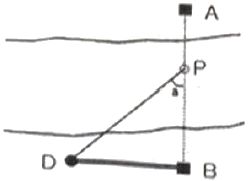
- 32.47m
- 38.02m
- 42.70m
- 58.54m
(정답률: 43%)
5. 유토곡선(Mass Curve)을 작성하는 목적과 거리가 먼 것은?
- 토공기계의 결정
- 토량의 배분
- 토량의 운반거리 산출
- 토공의 단가 결정
(정답률: 71%)
6. 하천측량에서 수위에 관한 용어 중 1년을 통하여 355일간은 이보다 내려가지 않는 수위를 무엇이라 하는가?
- 저수위
- 갈수위
- 최저수위
- 평균최저수위
(정답률: 70%)
7. □ABCD의 넓이는 1000m2이다. 선분 AE로 △ABE와 □AECD의 넓이의 비를 2:3으로 분할할 때 BE의 거리는?
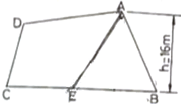
- 37m
- 40m
- 50m
- 60m
(정답률: 52%)
8. 노선측량의 작업단계에 해당되지 않는 것은?
- 시거측량
- 세부측량
- 용지측량
- 공사측량
(정답률: 63%)
9. 완화곡선의 성질에 대한 설명으로 ( )에 알맞게 짝지어진 것은?
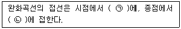
- ㉠ 곡선, ㉡ 원호
- ㉠ 직선, ㉡ 원호
- ㉠ 곡선, ㉡ 직선
- ㉠ 원호, ㉡ 곡선
(정답률: 65%)
10. 비행장의 입지선정을 위해 고려하여야할 주요 요소로 가장 거리가 먼 것은?
- 주변지역의 개발형태
- 항공기 이용에 따른 접근성
- 지표면 배수상태
- 비행장 운영에 필요한 지원시설
(정답률: 63%)
11. 클로소이드 곡선에서 곡선반지름(R)이 일정할 때 매개변수(A)를 2배로 증가시키면 완화 곡선 길이(L)는 몇 배가 되는가?
- √2
- 2
- 4
- 8
(정답률: 73%)
12. 땅고르기 작업을 위해 토지를 겨자(4m×3m)모양으로 분할하고, 각 교점의 지반고를 측량한 결과가 그림과 같을 때, 전체 토량은? (단, 표고 단위 : m)
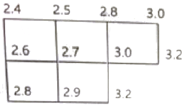
- 123m3
- 148m3
- 168m3
- 183m3
(정답률: 59%)
13. 그림과 같은 토지의 면적을 심프슨 제1공식을 적용하여 구한 값이 44m2라면 거리 D 는?
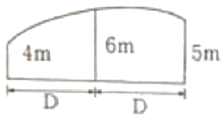
- 4.0m
- 4.4m
- 8.0m
- 8.8m
(정답률: 63%)
14. 자동차가 곡선구간을 주행할 때에는 뒷바퀴가 앞바퀴보다 곡선의 내측에 치우쳐서 통과하므로 차선폭을 증가시켜 준다. 이때 증가시키는 확폭의 크기(slack)는? (단, R: 차량중심의 회전반지름, L: 전후차륜거리)
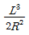
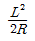
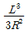
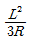
(정답률: 76%)
15. 도로선형을 계획함에 있어 A점의 성토면적이 25m2, B점의 성토면적이 10.42m2인 경우, 두 지점간의 토량은? (단, 두 지점간의 거리는 20m이다.)
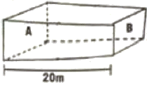
- 308.4m3
- 354.2m3
- 380.2m3
- 500.4m3
(정답률: 59%)
16. 그림과 같이 중앙종거(M)가 20m, 곡선반지름(R)이 100m일 때, 단곡선의 교각은?
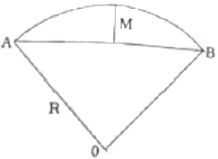
- 36°52‘12“
- 73°44’23”
- 110°36‘35“
- 147°28’46”
(정답률: 46%)
17. 그림과 같은 단곡선에서 곡선반지름(R)=50m, AD의 방위=N79°49’32“E, BD의 방위=N50°10’28”W일 때 AB의 거리는?
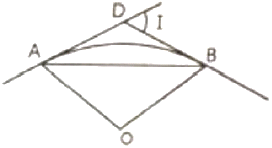
- 10.81m
- 28.36m
- 34.20m
- 42.26m
(정답률: 31%)
18. 터널측량에 대한 설명으로 틀린 것은?
- 터널 내의 곡선설치는 일반적으로 지상에서와 같은 편각법을 사용한다.
- 터널 외 중심선 측량은 트래버스측량 등으로 행한다.
- 터널 내의 측량에서는 기계의 십자선 및 표척 등에 조명이 필요하다.
- 터널측량의 분류는 터널 외 측량, 터널 내 측량, 터널 내외 연결측량으로 나눈다.
(정답률: 62%)
19. 터널 측량결과 입구 A와 출구 B의 좌표가 표와 같을 때 터널의 길이는?
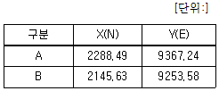
- 182.56m
- 194.34m
- 201.53m
- 213.49m
(정답률: 53%)
20. 댐을 축조하기 위한 조사계획 단계의 측량과 거리가 먼 것은?
- 수문자료조사를 위한 측량
- 지형, 지질조사를 위한 측량
- 유지관리조사를 위한 측량
- 보상조사를 위한 측량
(정답률: 50%)
2과목: 사진측량 및 원격탐사
21. 항공사진촬영 전 지상에 설치하는 대공표지에 대한 설명으로 옳은 것은?
- 대공표지는 사진 상에 분명히 확인할 수 있어야 하며, 그 크기와 재료는 항상 동일하여야 한다.
- 대공표지는 지상에 설치하는 만큼 지표에 완전히 붙어있어야 한다.
- 대공표지는 기준점 주위에 설치해서는 안 되며, 사진 상에서 찾기 쉽도록 광택이 나야한다.
- 설치장소는 천정으로부터 45°이상의 시계를 확보할 수 있어야 한다.
(정답률: 54%)
22. 항공사진의 성질에 대한 설명으로 옳지 않은 것은?
- 항공사진은 지면에 비고가 있으면 그 상은 변형되어 찍힌다.
- 항공사진은 지면에 비고가 있으면 연직사진의 경우에도 렌즈의 중심과 지상점의 높이의 차에 의하여 축척이 상이하다.
- 항공사진은 연직사진이 아니므로 지도를 만들 수 없다.
- 항공사진이 경사져 있으면 지면이 평탄해도 사진의 경사 방향에 따라 축척이 일정하지 않다.
(정답률: 75%)
23. 촬영고도 1000m에서 촬영한 사진 상에 나타난 철탑의 상단부분이 사진의 주점으로부터 6cm 떨어져 있으며, 철탑의 변위가 5mm로 나타날 때 이 철탑의 높이는?
- 53.3m
- 63.3m
- 73.3m
- 83.3m
(정답률: 51%)
24. 촬영고도 5400m, 사진 A의 주점기선길이 65mm, 사진 B의 주섬기선길이 70mm 일 때 시차차가 1.35mm인 두 점의 높이차는?
- 108m
- 110m
- 112m
- 114m
(정답률: 42%)
25. 위성영상 센서의 방사해상도에서 8bit로 표현할 수 있는 범위로 옳은 것은?
- 0~255
- 0~256
- 1~255
- 1~256
(정답률: 61%)
26. 항공사진측량의 촬영비행 조건으로 옳은 것은? (단, 항공사진측량 작업규정 기준)
- 구름 및 구름의 그림자에 관계없이 기온이 25℃이상인 날씨에 촬영한다.
- 촬영비행은 영상이 잘 나타나도록 지형에 맞춰 수시로 촬영고도를 변화시킨다.
- 태양고도가 산지에서는 30°, 평지에서는 25°이상일 때 촬영한다.
- 계획 촬영코스로부터의 수평이탈은 계획촬영 고도의 30% 이내로 촬영한다.
(정답률: 55%)
27. 어느 지역의 영상의 화소값 분포를 알아보기 위해 아래와 같은 도수분포표를 작성하였다. 이 그림으로 추정할 수 있는 해당지역의 토지피복의 수로 적합한 것은?
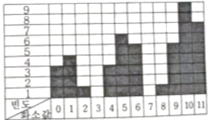
- 1
- 2
- 3
- 4
(정답률: 57%)
28. ( )에 알맞은 용어로 적합한 것은?
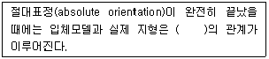
- 상사(相似)
- 이동(異動)
- 평행(平行)
- 일치(一致)
(정답률: 65%)
29. 2쌍의 영상을 입체시하는 방법 중 서로 직교하는 두 개의 평광 광선이 한 개의 편광면을 통화할 때 그 편광면의 진동방향과 일치하는 광선만 통과하고, 직교하는 광선을 통과 못하는 성질을 이용하는 입체시의 방법은?
- 여색 입체 방법
- 편광 입체 방법
- 입체경에 의한 방법
- 순동입체 방법
(정답률: 68%)
30. 항공사진에 찍혀있는 두 점 A, B의 거리를 관측하였더니 9cm이고, 축척 1:25000의 지형도에서 두 점간의 길이가 3.6cm이었다면 촬영고도는? (단, 카메라의 초점거리는 15cm, 사진크기는 23cm×23cm이며, 대상지는 평지이다.)
- 1200m
- 1500m
- 3000m
- 15000m
(정답률: 53%)
31. 다음 중 수동형 센서가 아닌 것은?
- 항공사진 카메라
- 다중분광 스캐너
- 열적외 스캐너
- 레이저 스캐너
(정답률: 66%)
32. 관성항법시스템(INS)의 구성으로 옳은 것은?
- 자이로와 가속도계
- 자이로와 도플러계
- 중력계와 도플러계
- 중력계와 가속도계
(정답률: 56%)
33. 사진측량은 4차원 측량이 가능하다. 다음 중 4차원 측량에 해당하지 않는 것은?
- 거푸집에 대하여 주기적인 촬영으로 변형량을 관측한다.
- 동적인 물체에 대한 시간별 움직임을 체크한다.
- 4가지의 각각 다은 구조물을 동시에 측량한다.
- 용광로의 열변형을 주기적으로 측정한다.
(정답률: 66%)
34. “초점거리 및 중심점을 조정하여 상좌표로부터 사진좌표를 얻는다.”와 관련된 표정은?
- 상호표정
- 내부표정
- 절대표정
- 접합표정
(정답률: 61%)
35. 원격탐사 데이터 처리 중 전처리 과정에 해당되는 것은?
- 기하보정
- 영상분류
- DEM 생성
- 영상지도 제작
(정답률: 58%)
36. 영상정합(image matching)의 대상기준에 따른 영상정합의 분류에 해당되지 않는 것은?
- 영역 기준 정합
- 객체형 정합
- 형상 기준 정합
- 관계형 정합
(정답률: 50%)
37. 물체의 분광반사특성에 대한 설명으로 옳은 것은?
- 같은 물체라도 시간과 공간에 따라 반사율이 다르게 나타난다.
- 토양은 식물이나 물에 비하여 파장에 따른 반사율의 변화가 크다.
- 식물은 근적외선 영역에서 가시광선 영역보다 반사율이 높다.
- 물은 식물이나 토양에 비해 반사율이 높다.
(정답률: 59%)
38. 사진판독의 요소와 거리가 먼 것은?
- 색조
- 모양
- 음영
- 고도
(정답률: 54%)
39. 도화기의 발달과정 중 가장 최근에 개발되어 사용되는 도화기는?
- 해석식 도화기
- 기계식 도화기
- 수치 도화기
- 혼합식 도화기
(정답률: 62%)
40. 사진은 중심점으로 렌즈의 광축과 화면이 교차하는 점은?
- 연직점
- 주점
- 등각점
- 부점
(정답률: 60%)
3과목: GIS 및 GPS
41. 다음 중 지도의 일반화 유형(단계)이 아닌 것은?
- 단순화
- 분류화
- 세밀화
- 기호화
(정답률: 59%)
42. 지리정보시스템(GIS)의 특징이 아닌 것은?
- 자료의 합성 및 중첩에 의한 다양한 공간분석이 용이하다.
- 사용자의 요구에 맞게 새로운 지도를 제작하거나, 수정할 수 있다.
- 대규모 자료를 데이터베이스화하여 효과적으로 관리할 수 있다.
- 한번 구축된 지리정보시스템의 자료는 항상성을 유지하기 위해 수정, 편집이 어렵다.
(정답률: 73%)
43. 지리정보시스템(GIS)의 데이트 취득에 대한 일반적인 설명으로 옳지 않은 것은?
- 스캐닝 디지타이징에 비하여 작업 속도가 빠르다.
- 디지타이징은 전반적으로 자동화된 작업과정이므로 숙련도에 크게 좌우되지 않는다.
- 스캐닝에 의한 수치지도 제작을 위해서는 래스터를 벡터로 변환하는 과정이 필요하다.
- 디지타이징은 지도와 항공사진 등 아날로그 형식의 자료를 전산기에 의해서 직접 판독할 수 있는 수치 형식으로 변환하는 자료획득 방법이다.
(정답률: 69%)
44. 지리정보시스템(GIS)의 자료처리에서 버퍼(buffer)에 대한 설명으로 옳은 것은?
- 공간 형상의 둘레에 특정한 폭을 가진 구역(zone)을 구축하는 것이다.
- 선 데이터에 대해서만 버퍼거리를 지정하여 버퍼링(buffering)을 할 수 있다.
- 면 데이터의 경우 면의 안쪽에서는 버퍼거리를 지정할 수 없다.
- 선 데이터의 형태가 구불구불한 굴곡이 매우 심하거나 소용돌이 형상일 경우 버퍼를 생성할 수 없다.
(정답률: 60%)
45. GNSS(Global Navigation Satellite System)에 해당되지 않는 것은?
- GPS
- GOCE
- GLONASS
- GALILEO
(정답률: 72%)
46. GPS에서 채택하고 있는 기준타원체는?
- WGS84
- Bossel1841
- GRS80
- NAD83
(정답률: 72%)
47. 지리정보시스템(GIS)에서 래스터 데이터를 이용한 공간분석 기능 수행 중 A와 B를 이용하여 수행한 결과 C를 만족시키기 위한 연산 조건으로 옳은 것은?
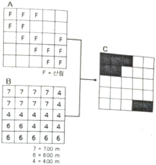
- (A=산림) AND (B＜500m)
- (A=산림) AND NOT (B＜500m)
- (A=산림) OR (B＜500m)
- (A=산림) XOR (B＜500m)
(정답률: 52%)
48. 공간 자료 품질의 핵심요소 중 하나로 데이터셋의 역사를 말하며 수치 데이터셋의 경우는 다음과 같이 정의할 수 있는 것은?
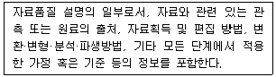
- 연혁(Lineage)
- 완전성(Completeness)
- 위치 정확도(Positional Accuracy)
- 논리적 일관성(Logical consistency)
(정답률: 63%)
49. 지리정보시스템(GIS)에서 사용하는 수치지도를 제작하는 방법이 아닌 것은?
- 항공기를 이용하여 항공사진을 촬영하여 수치지도를 만드는 방법
- 항공사진 필름을 고감도 복사기로 인쇄하는 방법
- 인공위성 데이터를 이용하여 수치지도를 만드는 방법
- 종이지도를 디지타이징하여 수치지도를 만드는 방법
(정답률: 56%)
50. 지리정보시스템(GIS)의 자료형태에서 그리드(grid)에 대한 설명으로 옳지 않은 것은?
- 래스터자료를 셀단위로 저장하는 X, Y좌표 격자망
- 정방형의 가상격자망을 채워주는 점 자료
- 규칙적으로 배치된 샘플점의 집합
- 일반적인 벡터형 자료시스템
(정답률: 54%)
51. GNSS 관측 오차에 대한 설명 중 틀린 것은?
- 대류권에 의하여 신호가 지연된다.
- 전리층에 의하여 코드 신호가 지연된다.
- 다중경로 오차에 의하여 신호의 세기가 증폭된다.
- 수학적으로 대류권 오차는 온도, 기압, 습도 등으로 모델링 한다.
(정답률: 48%)
52. GNSS의 활용 분야와 가장 거리가 먼 것은?
- 실내 3차원 모델링
- 기준점 측량
- 구조물 변위 모니터링
- 지형공간정보 획득 및 시설물 유지 관리
(정답률: 60%)
53. 지리정보시스템(GIS)의 분석기법 중 최단경로 탐색에 가장 적합한 것은?
- 버퍼 분석
- 중첩 분석
- 지형 분석
- 네트워크 분석
(정답률: 64%)
54. GPS 신호 중 1575.42MHz의 주파수를 가지는 신호는?
- P코드
- C/A코드
- L1
- L2
(정답률: 54%)
55. 관계형 공간 데이터베이스에서 질의를 위해 주로 사용하는 언어는?
- DML
- GML
- OQL
- SQL
(정답률: 70%)
56. 임의 지점 A에서 타원체고(h) 25.614m, 지오이드고(N) 24.329m일 때 A지점의 정표고(H)는?
- -1.285m
- 1.285m
- -49.943m
- 49.943m
(정답률: 68%)
57. 다음 중 도형이나 속성자료의 호환을 위해 사용되는 포맷이 아닌 것은?
- ASCII코드
- SHAPE
- JPG
- TIGER
(정답률: 48%)
58. 수치지형모델 중의 한 유형인 수치표고모델(DEM)의 활용과 거리가 가장 먼 것은?
- 토지피복도(Land Cover Map)
- 3차원 조망도(Perspective View)
- 음영기복도(Shaded Relief Map)
- 경사도(Slope Map)
(정답률: 57%)
59. 수록된 데이터의 내용, 품질, 작성자, 작성일자 등과 같은 유용한 정보를 제공하여 데이터 사용을 편리하게 하는 데이터를 의미하는 것은?
- 위상데이터
- 공간데이터
- 메타데이터
- 속성데이터
(정답률: 67%)
60. 다음 중 지리정보시스템(GIS)의 구성요소로 옳은 것은?
- 하드웨어, 소프트웨어, 인적자원, 데이터
- 하드웨어, 소프트웨어, 데이터, GPS
- 데이터, GPS, LIS, BIS
- BIS, LIS, UIS, GPS
(정답률: 67%)
4과목: 측량학
61. 수준측량의 오차 중 개인오차에 해당되는 것은?
- 시차에 의한 오차
- 대기굴절에 의한 오차
- 지구곡률에 의한 오차
- 태양의 직사광선에 의한 오차
(정답률: 68%)
62. 수평각 관측을 하여 다음과 같은 결과를 얻었다. 1회 관측의 경증률이 같다고 할 때 최확값의 평균제곱근 오차(표준오차)는?
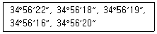
- ±1.0“
- ±1.8”
- ±2.2“
- ±2.6”
(정답률: 37%)
63. A,B 두점의 표고가 각각 118m, 145m이고 수평거리가 270m이며, AB간은 등경사이다. A점으로부터 AB선상의 표고 120m, 130m, 140m인 점까지 각각의 수평거리는?
- 10m, 110m, 210m
- 20m, 120m, 220m
- 20m, 110m, 220m
- 10m, 120m, 210m
(정답률: 57%)
64. 레벨의 요구 조건 중 가장 기본적인 요소로 레벨 조정의 항정법에 의하여 조정되는 것은?
- 연직축과 기포관축이 직교할 것
- 독취시에 기포의 위치를 볼 수 잇을 것
- 기포관축과 망원경의 시준선이 평행할 것
- 망원경의 배율과 수준기의 감도가 평형할 것
(정답률: 47%)
65. 구과량에 대한 설명으로 옳은 것은? (단, A: 구면삼각형의 면적, R: 지구반지름)
- 구과량을 구하는 식은
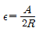
이다. - 구과량에 의해 사변형삼각망에서 내각의 합이 360°보다 작게 된다.
- 평면삼각형의 폐합오차는 구과량과 같다.
- 구과량이란 구면삼각형 내각의 합과 180°와의 차이를 뜻한다.
(정답률: 57%)
66. 1:25000 지형도에서 경사 30°인 지형의 두 점간 도상 거리가 4mm로 표시되엇다면 두 점간의 실제 경사거리는? (단, 경사가 일정한 지형으로 가정한다.)
- 50.0m
- 86.6m
- 100.0m
- 115.5m
(정답률: 29%)
67. 그림과 같은 트래버스에서 CD의 방위각은?
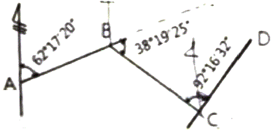
- 8°20‘13“
- 12°53’17”
- 116°14‘27“
- 118°20’13”
(정답률: 53%)
68. 삼각측량에서 1대회관측에 대한 설명으로 옳은 것은?
- 망원경을 정위와 반위로 한 각을 두 번 관측
- 망원경을 정위와 반위로 두 각을 두 번 관측
- 망원경을 정위와 반위로 한 각을 네 번 관측
- 망원경을 정위와 반위로 두 각을 네 번 관측
(정답률: 62%)
69. 트래버스 측량에서 측점 A의 좌표가 X=150m, Y=200m이고 측점 B까지의 측선 길이가 200m일 때 측점 B의 좌표는? (단, AB측선의 방위각은 280°25‘10“이다.)
- X=186.17m, Y=369.70m
- X=186.17m, Y=3.30m
- X=150.72m, Y=369.70m
- X=150.72m, Y=3.30m
(정답률: 52%)
70. 수준측량에서 5km 왕복측정에서 허용오차가 ±10mm라면 2km 왕복측정에 대한 허용오차는?
- ±9.5mm
- ±8.4mm
- ±7.2mm
- ±6.3mm
(정답률: 40%)
71. 노선 및 하천측량과 같이 폭이 좁고 거리가 먼 지역의 측량에 주로 이용되는 삼각망은?
- 사변형 삼각망
- 유심 삼각망
- 단열 삼각망
- 단 삼각망
(정답률: 63%)
72. 측량에서 발생되는 오차 중 주로 관측자의 미숙과 부주의로 인하여 발생되는 오차는?
- 부정오차
- 정오차
- 착오
- 표준오차
(정답률: 70%)
73. 그림과 같이 a1, a2, a3를 같은 경중률로 관측한 결과 a1, -a2, -a3=24“일 때 조정량으로 옳은 것은?
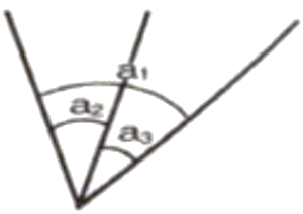
- a1=+8“, a2=+8”, a3=+8“
- a1=-8“, a2=+8”, a3=+8“
- a1=-8“, a2=-8”, a3=-8“
- a1=+8“, a2=-8”, a3=-8“
(정답률: 59%)
74. 표준척보다 3cm 짧은 50m 테이프로 관측한 거리가 200m 이었다면 이 거리의 실제의 거리는?
- 199.88m
- 199.94m
- 200.06m
- 200.12m
(정답률: 57%)
75. 5년마다 수립되는 측량기본계획에 해당되지 않는 사항은?
- 측량산업 및 기술인력 육성 방안
- 측량에 대한 기본 구상 및 추진 전략
- 측량의 국내외 환경 분석 및 기술연구
- 국가공간정보체계의 활용 및 공간정보의 유통
(정답률: 53%)
76. 측량기준점의 구분에 있어서 국가기준점에 해당하지 않는 것은?
- 위성기준점
- 수준점
- 중력점
- 지적도근점
(정답률: 61%)
77. 고의로 측량성과를 사실과 다르게 한 자에 대한 벌칙 기준으로 옳은 것은?
- 3년 이하의 징역 또는 3천만원 이하의 벌금
- 2년 이하의 징역 또는 2천만원 이하의 벌금
- 1년 이하의 징역 또는 1천만원 이하의 벌금
- 과태료
(정답률: 62%)
78. 공공측량에 관한 설명으로 옳지 않은 것은?
- 선행된 일반측량의 성과를 기초로 측량을 실시할 수 있다.
- 선행된 공공측량의 성과를 기초로 측량을 실시할 수 있다.
- 공공측량시행자는 제출한 공공측량 작업계획서를 변경한 경우에는 변경한 작업계획서를 제출하여야 한다.
- 공공측량시행자는 공공측량을 하려면 미리 측량지역, 측량기간, 그 밖에 필요한 사항을 시 ·도지사에게 통지하여야 한다.
(정답률: 58%)
79. 측량기기 중에서 트랜싯(데오드라이트), 레벨, 거리측정기, 토털 스테이션, 지피에스(GPS)수신기, 금속관로 탐지기의 성능검사 주기는?
- 2년
- 3년
- 5년
- 10년
(정답률: 70%)
80. 기본측량을 실시하기 위한 실시공고는 일간신문에 1회 이상 게재하거나 해당 특별시, 광역시·도 또는 특별자치도의 게시판 및 인터넷 홈페이지에 며칠 이상 게시하는 방법으로 하여야 하는가?
- 7일
- 15일
- 30일
- 60일
(정답률: 57%)